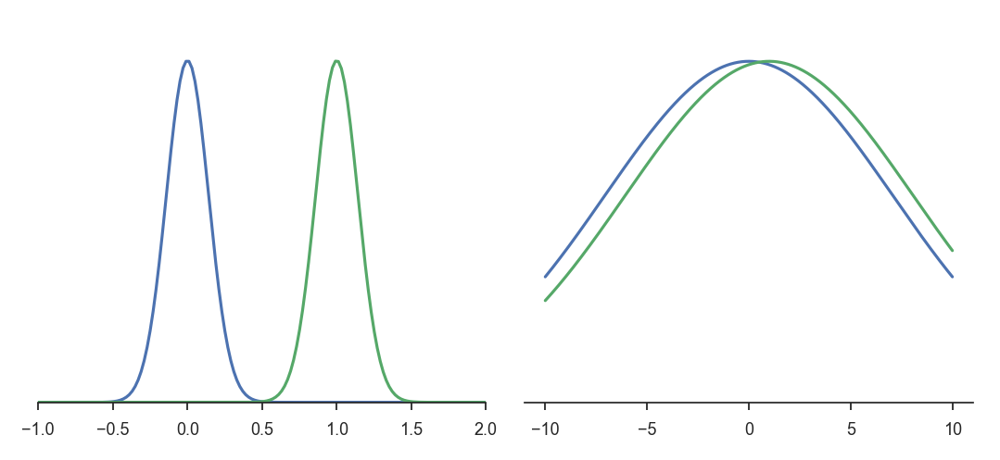
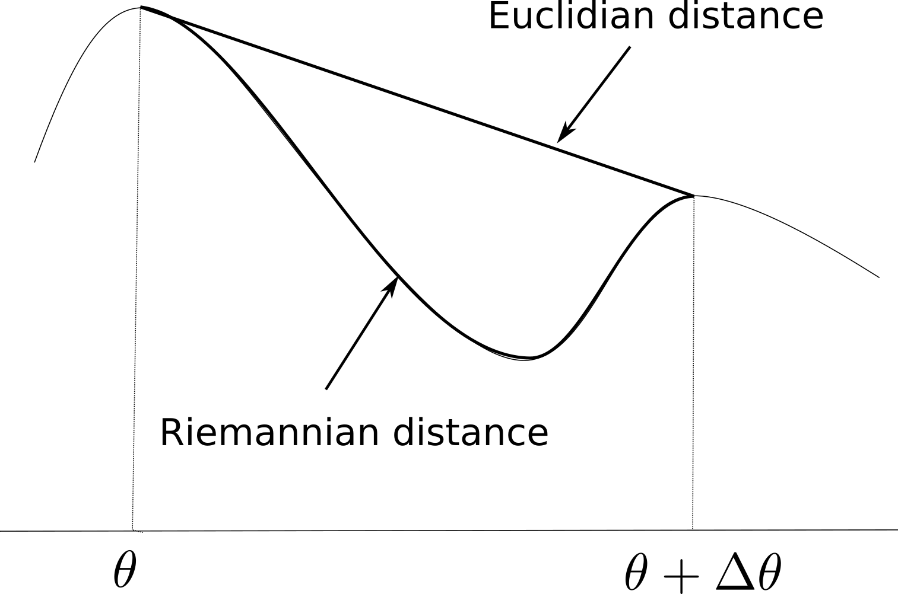

Natural gradients
Learning stability
The deep networks used as function approximators in the methods presented until now were all optimized (trained) using stochastic gradient descent (SGD) or any of its variants (RMSProp, Adam, etc). The basic idea is to change the parameters \(\theta\) in the opposite direction of the gradient of the loss function (or the same direction as the policy gradient, in which case it is called gradient ascent), proportionally to a small learning rate \(\eta\):
\[ \Delta \theta = - \eta \, \nabla_\theta \mathcal{L}(\theta) \]
SGD is also called a steepest descent method: one searches for the smallest parameter change \(\Delta \theta\) inducing the biggest negative change of the loss function. In classical supervised learning, this is what we want: we want to minimize the loss function as fast as possible, while keeping weight changes as small as possible, otherwise learning might become unstable (weight changes computed for a single minibatch might erase the changes made on previous minibatches). The main difficulty of supervised learning is to choose the right value for the learning rate: too high and learning is unstable; too low and learning takes forever.
In deep RL, we have an additional problem: the problem is not stationary. In Q-learning, the target \(r(s, a, s') + \gamma \, \max_{a'} Q_\theta(S', a')\) is changing with \(\theta\). If the Q-values change a lot between two minibatches, the network will not get any stable target signal to learn from, and the policy will end up suboptimal. The trick is to use target networks to compute the target, which can be either an old copy of the current network (vanilla DQN), or a smoothed version of it (DDPG). Obviously, this introduces a bias (the targets are always wrong during training), but this bias converges to zero (after sufficient training, the targets will be almost correct), at the cost of a huge sample complexity.
Target networks cannot be used in on-policy methods, especially actor-critic architectures.The critic must learn from transitions recently generated by the actor (although importance sampling and the Retrace algorithm might help). The problem with on-policy methods is that they waste a lot of data: they always need fresh samples to learn from and never reuse past experiences. The policy gradient theorem shows why:
\[ \begin{aligned} \nabla_\theta J(\theta) & = \mathbb{E}_{s \sim \rho_\theta, a \sim \pi_\theta}[\nabla_\theta \log \pi_\theta(s, a) \, Q^{\pi_\theta}(s, a)] \\ & \approx \mathbb{E}_{s \sim \rho_\theta, a \sim \pi_\theta}[\nabla_\theta \log \pi_\theta(s, a) \, Q_\varphi(s, a)] \end{aligned} \]
If the policy \(\pi_\theta\) changes a lot between two updates, the estimated Q-value \(Q_\varphi(s, a)\) will represent the value of the action for a totally different policy, not the true Q-value \(Q^{\pi_\theta}(s, a)\). The estimated policy gradient will then be strongly biased and learning will be suboptimal. In other words, the actor should not change much faster than the critic, and vice versa. A naive solution would be to use a very small learning rate for the actor, but this just slows down learning (adding to the sample complexity) without solving the problem.
To solve the problem, we should actually do the opposite of the steepest descent:
search for the biggest parameter change \(\Delta \theta\) inducing the smallest change in the policy, but in the right direction.
If the parameter change is high, the actor will learn a lot internally from each experience. But if the policy change is small between two updates (although the parameters have changed a lot), we might be able to reuse past experiences, as the targets will not be that wrong.
This is where natural gradients come into play, which are originally a statistical method to optimize over spaces of probability distributions, for example for variational inference. The idea to use natural gradients to train neural networks comes from @Amari1998. @Kakade2001 applied natural gradients to policy gradient methods, while @Peters2008 proposed a natural actor-critic algorithm for linear function approximators. The idea was adapted to deep RL by Schulman and colleagues, with Trust Region Policy Optimization [TRPO,@Schulman2015] and Proximal Policy Optimization [PPO,@Schulman2017], the latter having replaced DDPG as the go-to method for continuous RL problems, particularly because of its smaller sample complexity and its robustness to hyperparameters.
Principle of natural gradients

Consider the two Gaussian distributions in the left part of Figure 1 (\(\mathcal{N}(0, 0.2)\) and \(\mathcal{N}(1, 0.2)\)) and the two on the right (\(\mathcal{N}(0, 10)\) and \(\mathcal{N}(1, 10)\)). In both cases, the distance in the Euclidian space of parameters \(d = \sqrt{(\mu_0 - \mu_1)^2+(\sigma_0 - \sigma_1)^2}\) is the same between the two Gaussians. Obviously, the two distributions on the left are however further away from each other than the two on the the right. This indicates that the Euclidian distance in the parameter space (which is what regular gradients act on) is not a correct measurement of the statistical distance between two distributions (which what we want to minimize between two iterations of PG).
In statistics, a common measurement of the statistical distance between two distributions \(p\) and \(q\) is the Kullback-Leibler (KL) divergence \(D_{KL}(p||q)\), also called relative entropy or information gain. It is defined as:
\[ D_{KL}(p || q) = \mathbb{E}_{x \sim p} [\log \frac{p(x)}{q(x)}] = \int p(x) \, \log \frac{p(x)}{q(x)} \, dx \]
Its minimum is 0 when \(p=q\) (as \(\log \frac{p(x)}{q(x)}\) is then 0) and is positive otherwise. Minimizing the KL divergence is equivalent to “matching” two distributions. Note that supervised methods in machine learning can all be interpreted as a minimization of the KL divergence: if \(p(x)\) represents the distribution of the data (the label of a sample \(x\)) and \(q(x)\) the one of the model (the prediction of a neural network for the same sample \(x\)), supervised methods want the output distribution of the model to match the distribution of the data, i.e. make predictions that are the same as the labels. For generative models, this is for example at the core of generative adversarial networks [@Goodfellow2014;@Arjovsky2017] or variational autoencoders [@Kingma2013].
The KL divergence is however not symmetrical (\(D_{KL}(p || q) \neq D_{KL}(q || p)\)), so a more useful divergence is the symmetric KL divergence, also known as Jensen-Shannon (JS) divergence:
\[ D_{JS}(p || q) = \frac{D_{KL}(p || q) + D_{KL}(q || p)}{2} \]
Other forms of divergence measurements exist, such as the Wasserstein distance which improves generative adversarial networks [@Arjovsky2017], but they are not relevant here. See https://www.alexirpan.com/2017/02/22/wasserstein-gan.html for more explanations.
We now have a global measurement of the similarity between two distributions on the whole input space, but which is hard to compute. How can we use it anyway in our optimization problem? As mentioned above, we search for the biggest parameter change \(\Delta \theta\) inducing the smallest change in the policy. We need a metric linking changes in the parameters of the distribution (the weights of the network) to changes in the distribution itself. In other terms, we will apply gradient descent on the statistical manifold defined by the parameters rather than on the parameters themselves.

Let’s consider a parameterized distribution \(p(x; \theta)\) and its new value \(p(x; \theta + \Delta \theta)\) after applying a small parameter change \(\Delta \theta\). As depicted on Figure 2, the Euclidian metric in the parameter space (\(||\theta + \Delta \theta - \theta||^2\)) does not take the structure of the statistical manifold into account. We need to define a Riemannian metric which accounts locally for the curvature of the manifold between \(\theta\) and \(\theta + \Delta \theta\). The Riemannian distance is defined by the dot product:
\[ ||\Delta \theta||^2 = < \Delta \theta , F(\theta) \, \Delta \theta > \]
where \(F(\theta)\) is called the Riemannian metric tensor and is an inner product on the tangent space of the manifold at the point \(\theta\).
When using the symmetric KL divergence to measure the distance between two distributions, the corresponding Riemannian metric is the Fisher Information Matrix (FIM), defined as the Hessian matrix of the KL divergence around \(\theta\), i.e. the matrix of second order derivatives w.r.t the elements of \(\theta\). See https://stats.stackexchange.com/questions/51185/connection-between-fisher-metric-and-the-relative-entropy and https://wiseodd.github.io/techblog/2018/03/14/natural-gradient/ for an explanation of the link between the Fisher matrix and KL divergence.
The Fisher information matrix is defined as the Hessian of the KL divergence around \(\theta\), i.e. how the manifold locally changes around \(\theta\):
\[ F(\theta) = \nabla^2 D_{JS}(p(x; \theta) || p(x; \theta + \Delta \theta))|_{\Delta \theta = 0} \]
which necessitates to compute second order derivatives which are very complex and slow to obtain, especially when there are many parameters \(\theta\) (the weights of the NN). Fortunately, it also has a simpler form which only depends on the outer product between the gradients of the log-likelihoods:
\[ F(\theta) = \mathbb{E}_{x \sim p(x, \theta)}[ \nabla \log p(x; \theta) (\nabla \log p(x; \theta))^T] \]
which is something we can easily sample and compute.
Why is it useful? The Fisher Information matrix allows to locally approximate (for small \(\Delta \theta\)) the KL divergence between the two close distributions (using a second-order Taylor series expansion):
\[ D_{JS}(p(x; \theta) || p(x; \theta + \Delta \theta)) \approx \Delta \theta^T \, F(\theta) \, \Delta \theta \]
The KL divergence is then locally quadratic, which means that the update rules obtained when minimizing the KL divergence with gradient descent will be linear. Suppose we want to minimize a loss function \(L\) parameterized by \(\theta\) and depending on the distribution \(p\). Natural gradient descent [@Amari1998] attempts to move along the statistical manifold defined by \(p\) by correcting the gradient of \(L(\theta)\) using the local curvature of the KL-divergence surface, i.e. moving some given distance in the direction \(\tilde{\nabla_\theta} L(\theta)\):
\[ \tilde{\nabla_\theta} L(\theta) = F(\theta)^{-1} \, \nabla_\theta L(\theta) \]
\(\tilde{\nabla_\theta} L(\theta)\) is the natural gradient of \(L(\theta)\). Natural gradient descent simply takes steps in this direction:
\[ \Delta \theta = - \eta \, \tilde{\nabla_\theta} L(\theta) \]
When the manifold is not curved (\(F(\theta)\) is the identity matrix), natural gradient descent is the regular gradient descent.
But what is the advantage of natural gradients? The problem with regular gradient descent is that it relies on a fixed learning rate. In regions where the loss function is flat (a plateau), the gradient will be almost zero, leading to very slow improvements. Because the natural gradient depends on the inverse of the curvature (Fisher), the magnitude of the gradient will be higher in flat regions, leading to bigger steps, and smaller in very steep regions (around minima). Natural GD therefore converges faster and better than regular GD.
Natural gradient descent is a generic optimization method, it can for example be used to train more efficiently deep networks in supervised learning. Its main drawback is the necessity to inverse the Fisher information matrix, whose size depends on the number of free parameters (if you have N weights in the NN, you need to inverse a NxN matrix). Several approximations allows to remediate to this problem, for example Conjugate Gradients or Kronecker-Factored Approximate Curvature (K-FAC).
- http://andymiller.github.io/2016/10/02/natural_gradient_bbvi.html
- https://hips.seas.harvard.edu/blog/2013/01/25/the-natural-gradient/
- http://kvfrans.com/what-is-the-natural-gradient-and-where-does-it-appear-in-trust-region-policy-optimization
- https://wiseodd.github.io/techblog/2018/03/14/natural-gradient/
- A tutorial by John Schulman (OpenAI) https://www.youtube.com/watch?v=xvRrgxcpaHY
- A blog post on the related Hessian-free optimization and conjuguate gradients http://andrew.gibiansky.com/blog/machine-learning/hessian-free-optimization/
- K-FAC: https://syncedreview.com/2017/03/25/optimizing-neural-networks-using-structured-probabilistic-models/
- Conjugate gradients: https://www.cs.cmu.edu/~quake-papers/painless-conjugate-gradient.pdf
Note: Natural gradients can also be used to train DQN architectures, resulting in more efficient and stable learning behaviors [@Knight2018].
Natural policy gradient and Natural Actor Critic (NAC)
@Kakade2001 applied the principle of natural gradients proposed by @Amari1998 to the policy gradient theorem:
\[ \nabla_\theta J(\theta) = \mathbb{E}_{s \sim \rho_\theta, a \sim \pi_\theta}[\nabla_\theta \log \pi_\theta(s, a) \, Q^{\pi_\theta}(s, a)] \]
This regular gradient does not take into account the underlying structure of the policy distribution \(\pi(s, a)\). The Fisher information matrix for the policy is defined by:
\[ F(\theta) = \mathbb{E}_{s \sim \rho_\theta, a \sim \pi_\theta}[ \nabla \log \pi_\theta(s, a) (\nabla \log \pi_\theta(s, a))^T] \]
The natural policy gradient is simply:
\[ \tilde{\nabla}_\theta J(\theta) = F(\theta)^{-1} \, \nabla_\theta J(\theta) = \mathbb{E}_{s \sim \rho_\theta, a \sim \pi_\theta}[ F(\theta)^{-1} \, \nabla_\theta \log \pi_\theta(s, a) \, Q^{\pi_\theta}(s, a)] \]
@Kakade2001 also shows that you can replace the true Q-value \(Q^{\pi_\theta}(s, a)\) with a compatible approximation \(Q_\varphi(s, a)\) (as long as it minimizes the quadratic error) and still obtained an unbiased natural gradient. An important theoretical result is that policy improvement is guaranteed with natural gradients: the new policy after an update is always better (more expected returns) than before. He experimented this new rule on various simple MDPs and observed drastic improvements over vanilla PG.
@Peters2008 extended on the work of @Kakade2001 to propose the natural actor-critic (NAC). The exact derivations would be too complex to summarize here, but the article is an interesting read. He particularly reviews the progress at that time on policy gradient for its use in robotics. He showed that the \(F(\theta)\)) is a true Fisher information matrix even when using sampled episodes, and derived a baseline \(b\) to reduce the variance of the natural policy gradient. He demonstrated the power of this algorithm by letting a robot learning motor primitives for baseball.